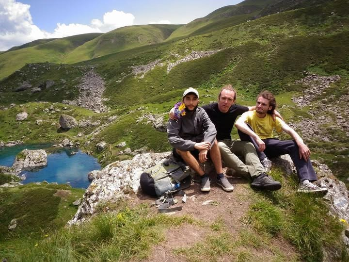
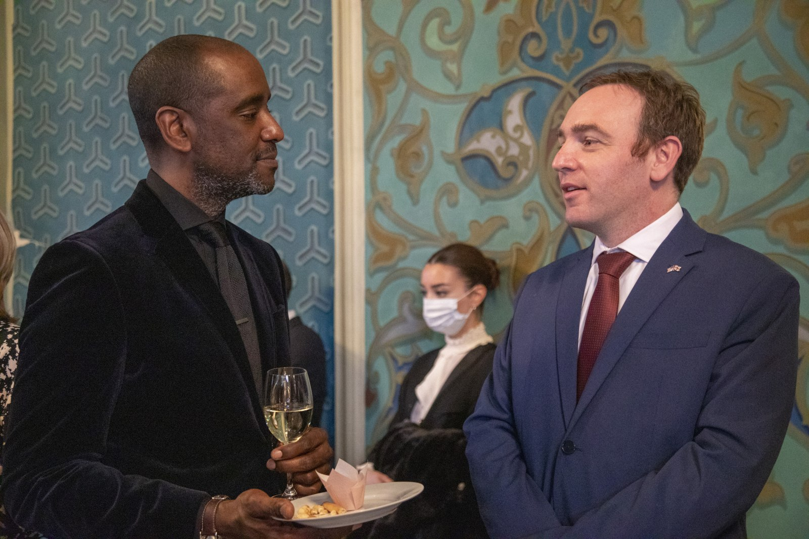
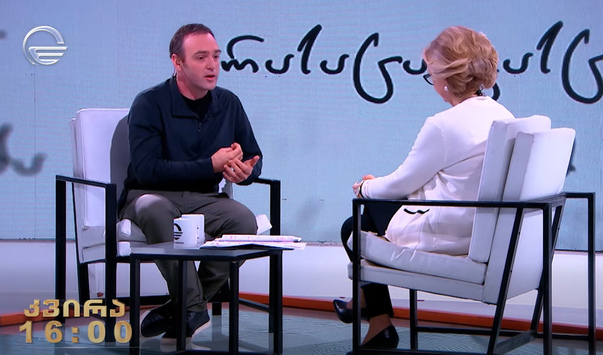

About Me
I'm a Utah native living in Tbilisi, Georgia, with a somewhat unconventional professional background spanning technology, international development, diplomacy, research, education, and literature.
Over the course of my career, I've worked across the public, private, nonprofit, and academic sectors, collaborating with businesses, government institutions, international organizations, universities, and cultural institutions.
Much of my work revolves around how organizations collect, manage, interpret, and use information. This has taken me into areas as diverse as data integration, artificial intelligence, monitoring, evaluation, accountability and learning (MEAL), research, and organizational development.
Over the years, I've produced an extensive body of analytical reports, research studies, assessments, data visualizations, interactive dashboards, and technical documentation. I'm particularly interested in making complex information accessible, meaningful, and useful to different audiences.
Alongside my professional work, I'm a writer, researcher, and translator. My interests and projects have ranged from historical preservation and archival research to literary translation and philosophy. I co-authored May These Ashes Be Light (2023) and received a 2024–2025 Creative Grant from Harvard's Woodberry Poetry Room.
The common thread running through my admittedly eclectic career is curiosity. I enjoy learning new things, solving difficult problems, exploring unfamiliar subjects, and creating things that are both useful and interesting.
This website brings together a selection of my professional, academic, and creative work.
Areas of interest
- Research and fieldwork
- Literature and translation
- Cultural memory and public history
- Project development and grant writing
- Data and technical communication
Photographs


